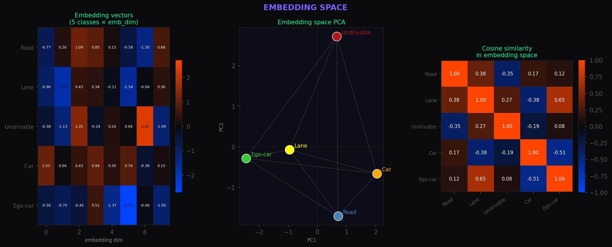
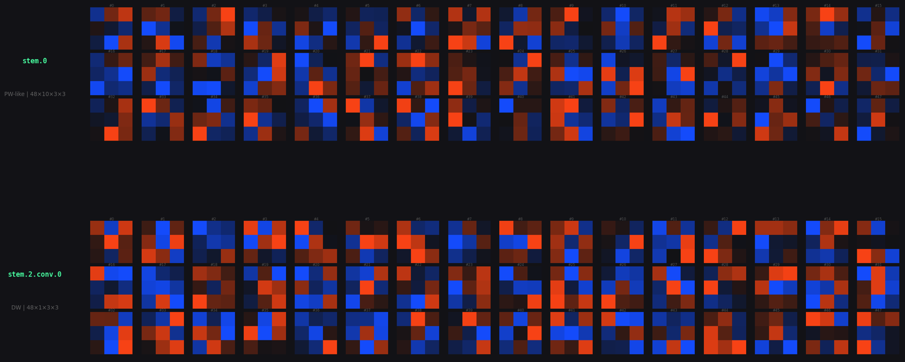
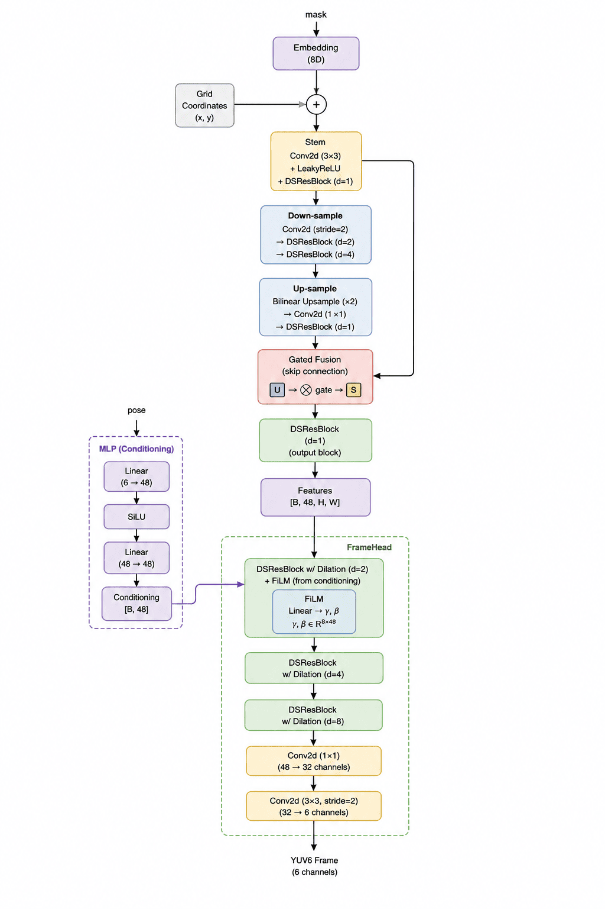

This page includes visualizations of my solution to comma.ai compression challenge.
I hope you will like my visualizations as much as I do. I really liked the whole process of working on this challenge because the decompressed videos are visually very appealing and they often seemed like 80's video games with lots of neons.
Thanks to the uncertainty video, I was able to find my model's weak spots and target them with special loss functions such as boundary loss. It displays also the original mask for refference, segnet and posenet losses and added speedometer for fun :). The uncertainty map clearly shows that biggest improvement in segenet distortion can be made in distant objects.
This video shows what happens in each step in the Generator with the input data. The colors are PCA approximations into rgb space (similar colors means the convolution layers interpret the area as separate object). You can see, that most details are lost in the U-net down layer. If I had more time, this would be the place to focus on and try to conserve more details.
First video is generated by approx. 4× larger network that preserved better details.
Second video is generated by model with higher road lane luminance.
The embedding space aptly shows relationships between classes. For example, the model can well separate undrivable from rest of objects, and interestingly, ego-vehicle and road lanes are closely related in the embedding space. You can also see that ego-vehicle and vehicle being on the other sides of embedding space, maybe this means that other cars are seen as obstacles from the model :).

In this image, you can see the first two convolutional layers in my Generator network. Note that many of the kernels learned to look for similar features, therefore future work could replace classic convolutions with Ghost Convolutions which approximate feature maps with cheap linear transformations and achieve similar results while saving some memory.

My approach uses a Generator network that extracts masks, inter-pair poses, and intra-pair poses, and generates pairs of yuv6 frames. The generator consists of a MaskEncoder that extracts features from mask, and a FrameHead that applies shifts to the features. They both use deptwise separated convolutions with residual connections, and SqueezeExcitation and PixelAttention blocks.

Here is a quick breakdown of what is happening "under the hood" for those interested in the technical side of my solution.
My first instinct was to use FFmpeg. I managed to shrink the 37 MB video down to just a few hundred KB, but the quality was terrible. The high compression created blocky artifacts that lacked the texture PoseNet needs to work correctly and also the block edges were hard to remove by learned Enhancer. That is why I pivoted to building a custom neural reconstruction system.
I designed a Generator network with roughly 110,000 parameters. It is quite small because the model size itself counts towards the final score. It consists of three main parts:
To keep the model size tiny while maintaining quality, I used several "cheap" neural tricks:
In the end, while the video looks a bit like a neon game from the 80s, it was highly effective for the challenge. I managed to get score of 0.72 and secure 9th place out of 30 participants at the time of my submission, which I'm pretty happy with!